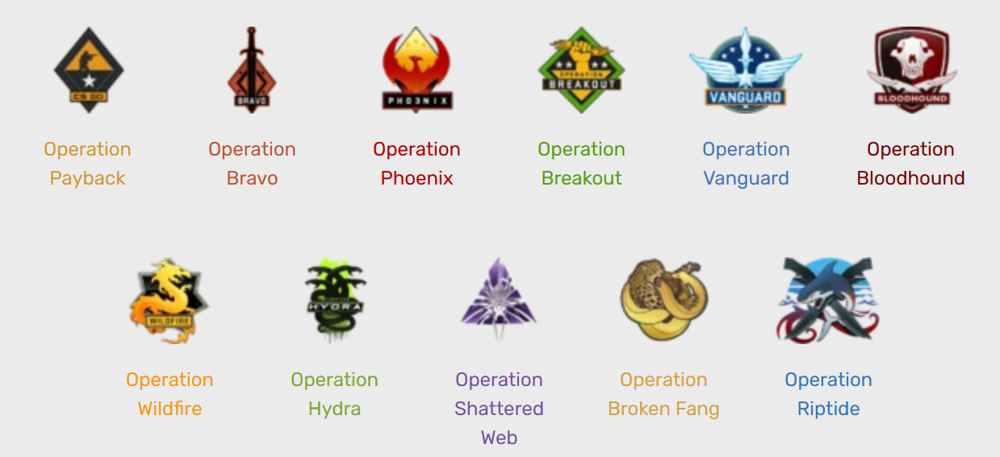
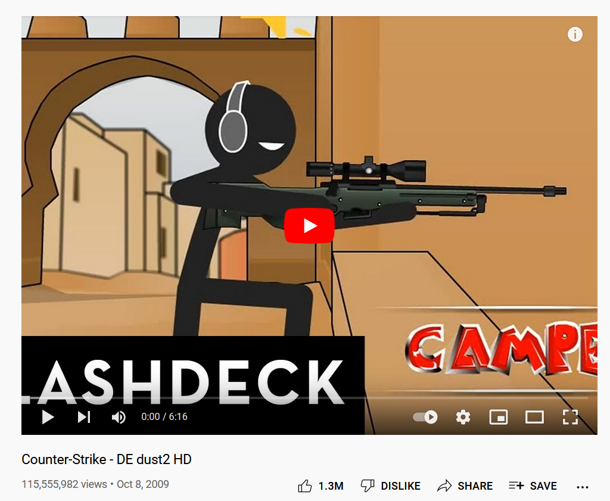

Counter-Strike 1.6. Generally considered as the first game in the series.
Counter-Strike: Condition Zero. A try of single player story in Counter-Strike.
Counter-Strike: Source. Generally considered the true sequel to CS 1.6.
Counter-Strike: Global Offensive. The latest and greatest installment of the series.
History
Counter-Strike 1.6
Counter-Strike 1.6 (CS 1.6) originally relased as a modification (mod) during 1999 for another Valve game named
Half Life
that was designed by
Minh "Gooseman" Le
and
Jess "Cliffe" Cliffe
before the rights to the mod's intellectual property were acquired by Valve, who then further developed the game and made it into a product which was released on November 9, 2000.
On launch, people loved it, it sold millions of copies and was reviewed highly. Esports organizations started to take notice and in the near future after the games release, players started to play this game competitively.
Colloquially known as CS 1.6 because of the final update it recieved, players often visted cyber cafes and held LAN parties to play the game with their friends. The game has become synonymous with competitive first-person shooters that not only is easy to learn, it is easy to access as well.
Famous image of a man being duct taped to the ceiling to play Counter-Strike in a cyber cafe.
It was in this game that many well known and famous maps are played such as:
de_dust
de_dust2
de_mirage
de_nuke
de_cbble
cs_office
cs_assault
And More
A comparison of Dust II B Bombsite from different Counter-Strike games.
Dust II was so famous that players said that when a game has a map editor, there is a Dust II.
Counter-Strike: Condition Zero
Counter-Strike: Condition Zero (CS:CZ) was released in 2004 and is Valve's attempt at creating a single player Counter-Strike game. It still has multiplayer mode just like its older brother but most players does not play it due to being too used to CS 1.6.
It features updated graphics, textures, maps, models and also 2 single player campaigns, Tour of Duty and Condition Zero: Deleted Scenes.
Counter-Strike: Source
Counter-Strike: Source (CS:S) was released also in 2004 and is considered the true sequel to CS 1.6, it features enhanced graphics along with maintaining the core gameplay of CS 1.6. This game was originally bundled along with Half Life 2, the sequel to Half Life.
The game recieved good reviews from most people but pro players were split regarding CS:S, some embraced it and played it competitively but some argued that the gameplay was worse, the gun mechanics were different and so on.
Because of that, pro players are divided on this issue and different tournaments were held, usually one for CS 1.6 and another for CS:S. It was not until 2012 that another game brought everyone into a same roof again.
Counter-Strike: Global Offensive
Counter-Strike: Global Offensive (CS:GO) released in 2012, regarded as the sequel to both CS 1.6 and CS:S after 8 long years of waiting.
At launch, the game was horrendous, the graphics is terrible, the gunplay was terrible, the audio is terrible, everything was terrible. CS 1.6 and CS:S players hated it and went back to playing their respective games.
A video showing CS:GO at its early days.
Slowly but surely, Valve started to fix the many bugs riddled with the game, adjusting and balancing weapons to be fair for both teams and just a few years ago released an update which consists of a massive graphical overhaul.
With constant support from the developers, and due to the fact that the game itself has little to no competition, casuals and pros alike started to flock towards the game. In a sense, CS:GO saved Counter-Strike from the grave.
A video made by Valve describing Counter-Strike's short but colourful history.
Important Updates/Events In CS:GO
Skins
With constant updates and additions to the game, one update is fated to change the entire Counter-Strike scene forever. The Arms Deal update introduced in 2013 brought cosmetic items, commonly known as skins to the game. Skins are a way to implement player's own flair into gameplay, making the game truly yours.
This update provided Valve with another revenue source, which they quickly taken advantage of as they have placed a lot of attention and resources into developing skins for the community. As time goes on, an entire economy slowly developed around skins, and Valve was making bank.
Skins are retrieved from cases which drops randomly when you play a match, to unlock the case, you will need to buy a key worth RM 10 to unlock it. Depending on your luck, you will get skins that are common or rare, the rarest of them all are skins for gloves and knifes. If a player does not want to open the case, they can sell the case at the Steam Community Market, where its price is dictated by economic rules, such as demand and supply.
With this economic ecosystem going on, smart players know how to earn money through this system, and some has made a living off of it. People will research and analyse how to earn money off of this market, similar to stock exchanging, albeit in a smaller scale. Valve has also lended community support to create skins and they will be awarded money if Valve picked their design. Some artists actually make a living off of designing skins.
Some skins can reach absurd levels of value.
With this virtual economy going on, there exists gambling, betting and trading sites designed around skins. Players can use their skins as a symbol of value in the games. Some skins can cost upwards of 1 million Ringgit under the right circumstances.
The most expensive items usually are the rarest, which means lucky players who has gotten it from a case can sell it with their own price, as there are very few of them in the market.
This update brought CS:GO's playerbase skyrocketing and until now, CS:GO remains one of the only games recognized from its skins and cosmetics.
A M4A4 Howl with 4x iBuyPower Holo Stickers, valued at 200,000 USD
A AWP Dragon Lore with 4x Titan Holo Stickers, valued at 250,000 USD
A AK-47 Case Hardened with 4x Titan Holo Stickers, valued at 400,000 USD
A Karambit Case Hardened , the side of the knife is fully blue, valued at 600,000 USD
The top 4 most expensive skins in the game.
Operations
Events known as "Operations" are occasionally launched by Valve as a way to provide flair to normal Counter-Strike gameplay. Players are required to purchase an "Operation Pass" to be able to access the contents.
Players complete objectives provided by the game in order to level up their passes to obtain an "Operation Coin" that displays on a player's profile and to get skins.

List of Operations that took place, latest one being Operation Riptide.
Panorama UI
Valve released an update on 19th June 2018 that overhauls the graphics and mainly the User Interface (UI). It was called Panorama and it was met with strong criticism when it launched. It effectively stripped CS:GO of its identity and is swapped with a new one.
People mainly complained because it takes a hit on performance due to the game needing to render graphical elements in the background in the name of appearances. A game such as CS:GO that favours lower end computers are now less accesible than ever.
Scaleform UI
Panorama UI
A comparison between the Main Menu of the 2 different UIs.
Free To Play and Battle Royale
At the same year that Panorama UI was released, Valve released a game mode called "Danger Zone" which mimics the famous Battle Royale genre, popularized by games such as PlayerUnknown Battlegrounds (PUBG) and Fortnite, games and genres that are popular at that point in time.
The game mode itself was unpopular, as people play CS:GO for its nail biting tense gameplay, as opposed to the more laid back games of Battle Royales. Nonetheless, Valve still pushes out updates to enhance Danger Zone and as of today, is a valid alternative to those wanting to take a break from normal CS:GO gameplay.
At the same time, Valve has made the decision to make the game Free To Play, bringing in more players than before. Players who bought the game before this update is upgraded to "Prime" status which provides a better gameplay experience with less hackers and less toxic players. They also recieve a "Loyalty Badge" which is a medal that players can show off at their profile.
New players will have to grind their way to Prime status by reaching Level 21. Mixed opinions are recieved from this update, on one hand, people think that more hackers and toxic players will enter the game and provide an overall negative experience to the games while the opposing side suggests that more players can enjoy the wonderful game that is Counter-Strike more easily and it brings in more money to the ecosystem.

The most viewed video of all time about Counter-Strike.
Link
A New Competitor Approaches
Riot Games, a game studio famous for making League of Legends, another popular esports game, started developing on a game with a focus on making tactical shooters and esports more accessible to new players, and creating a game that would attract a large competitive scene.
The result? A new free to play first-person shooter game named Valorant. It was teased with the codename Project A before settling on the name Valorant. Riot Games hired former Counter-Strike map designers and character designers to create this game.
Leading up to the games launch, footage and gameplay trailers is slowly released and many players noted the similarity with CS:GO and some say it may be a CS:GO killer. It combines a blend of gunplay and movement from CS:GO and elements of another first-person shooter named Overwatch which mainly focuses on class and ability based characters that aid in gameplay.
Riot Games are tactiful in their marketing strategy. They launched their closed beta on 7th April 2020 and requires players to watch livestreamers on Twitch to gain access to closed beta keys dropped randomly, thus getting more eyeballs on their new game.
Due to a high level of hype surrounding Valorant, Valve launched a variety of quality of life updates aimed to retain its current playerbase, including nerfs to the SG 553, accidental buff to the Desert Deagle, Tec-9 buff, 1v1s during before match warmup, importing other player's crosshairs and many more.
With that being said and done, Valorant's player base still trails far behind that of CS:GO, having only around 13 million active monthly users for Valorant compared to CS:GO's strong number of 37 million monthly.
History lesson complete, moving on. Click here
to understand what makes this game so popular for esports.
Background Image: A wise shot of the LanXess Arena, Cologne, hosting a tournament called ESL One Cologne 2019, sometimes referred to as "The Cathedral of Counter-Strike".